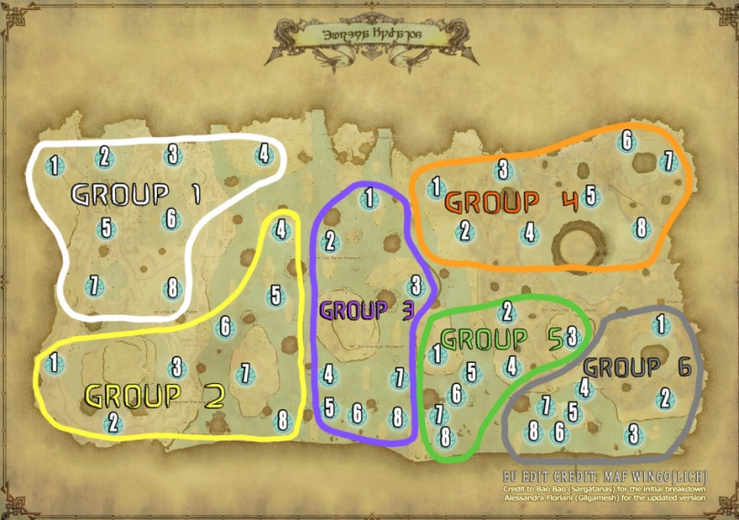

Hydatos
- Check that everyone is level 60.
- If there is time
- Look for and mark fairies.
/p If you find a fairy, don't shout them in shout chat, just put a raid marker on it. Don't take any fairies yet, we will take them just before we enter BA.
- Check that the party is moving to Ovni when the raid leader has asked us to.
- Do a ready check when the leader asks for it.
- Kill Ovni.
- Check that everyone has the blue portal buff.
- Use portal macro.
/p we are party 5
/p do not take fairies yet/p let me know if you want a map marker for your portal
- Take fairy.
- Check that people are going to the right portals.
- Take portal.

Host
After entering Hydatos
- Tell everyone about what we know about Ovni's spawn time.
- If there is time
- Tell everyone not to take fairies, and what to do if they find a fairy.
At Ovni
- Tanks enable tank stances.
- Ready checks.
During Ovni
- Do callouts
- Tell people not to accept raises when Ovni is close to
After Ovni is killed
- Tell party leaders to check if everyone is buffed
- Tell party leaders to post their portal macro if everyone is buffed
- Tell everyone to go to a fairy and wait for blue portals to appear before taking the fairy.
When blue portals spawn
- Tell everyone that they can take the fairy
- Tell everyone not to click the blue portals, and to wait for red portals to spawn.
When red portals spawn
- Tell everyone that they can click the red portals and head inside.
- Tell everyone that they should wait on the bridge for shell and protect.